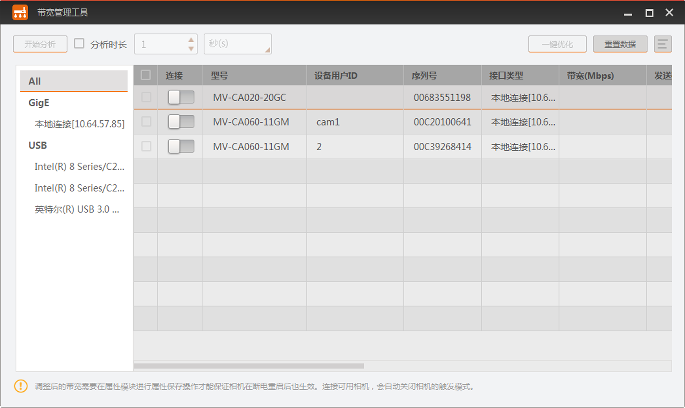

带宽管理
带宽管理器用于调节网口相机和U3V相机的使用带宽。
当多相机共用同一个接口采集图像时，通过工具调节带宽可避免出现丢包或丢图的问题，使设备都能稳定运行。
-
我司网口相机都支持通过带宽管理器调节带宽，与之对应的参数为GEV SCPS数据包大小和GEV SCPD。
-
我司U3V相机需固件支持带宽调节功能，才可通过带宽管理器调节带宽。与之对应的参数为Device Link Throughput Limit Enable和Device Link Throughput Limit。具体是否支持以及如何设置请咨询技术支持。
带宽管理器通过菜单栏的进入，界面如下图所示。
使用带宽管理工具前，须确保相机为可用状态且相机触发模式未开启。工具仅连接可用状态的相机进行分析。

图 1 带宽管理工具上图的左侧显示当前PC上GigE和USB接口的信息，相关操作如下：
-
选中ALL时，右侧显示当前能搜索到的所有网口相机和U3V相机。
-
选中GigE或USB时，右侧显示当前该类型接口下能搜索到的相机。
-
选中某个接口时，右侧只显示该接口下能搜索到的相机。
开始带宽分析和优化带宽前，需在右侧连接并勾选相机。
工具显示设备相关信息，可通过工具右上角的 设置显示项内容。
设置显示项内容。
-
勾选相机后，可通过单击左上角的开始分析按钮进行分析。此时勾选的相机会同时开始采集图像，右侧会显示采集图像过程中的数据信息。具体数据信息请见下表。
表 1 数据信息 带宽管理器关于分析的显示项
具体含义
发送数据量（Mbps）
分析过程中相机发送给PC的数据量
接收数据量（Mbps）
分析过程中PC从相机处接收的数据量
发送帧率（fps）
分析过程中相机发送给PC的帧率
接收帧率（fps）
分析过程中PC接收到的相机的帧率
图像数
分析过程中PC接收到的相机发出的图像数
丢包数
分析过程中PC未能成功从相机处接收到的数据包
错误数
分析过程中该相机发送给PC帧率时的错误数
在不分析以及分析过程中，可通过右上角的重置数据清空上次或此次分析的数据。
说明带宽分析的时长可手动设置，可以自动设置。
-
手动设置：手动单击开始分析后开始进行分析，手动单击停止分析后停止分析。
-
自动设置：勾选左上角的分析时长后设置时间，时间单位分别有秒（s）、分（m）、小时（h）和天（d）四种可选。分析时长最短为1s，最长为24d。设置结束后，单击开始分析即可。到设定的分析时长后，带宽管理器自动停止分析。分析过程中，若需要提前结束，也可手动单击停止分析来结束。
-
一键优化功能可对已勾选的网口相机根据情况调整带宽。保证合理利用带宽的同时，避免出现相机丢包或丢图的问题。
-
一键优化功能仅支持网口相机。
-
一键优化功能仅在选中GigE接口下的单张网卡时才生效。
通过带宽管理器调整后的带宽需要在属性模块进行保存属性以及设置默认属性的操作，才能保证设置的带宽参数在相机断电重启后依然生效。如何保存并设置默认属性请查看保存相机属性章节的介绍。